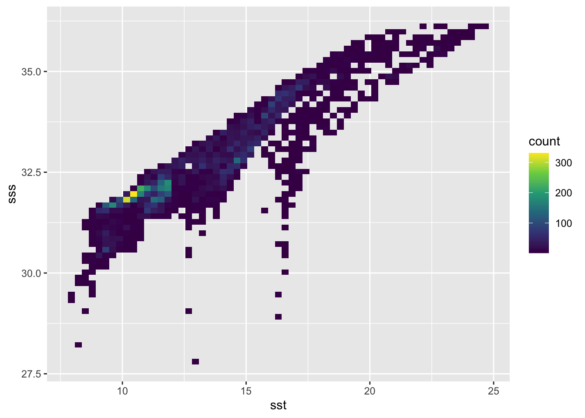
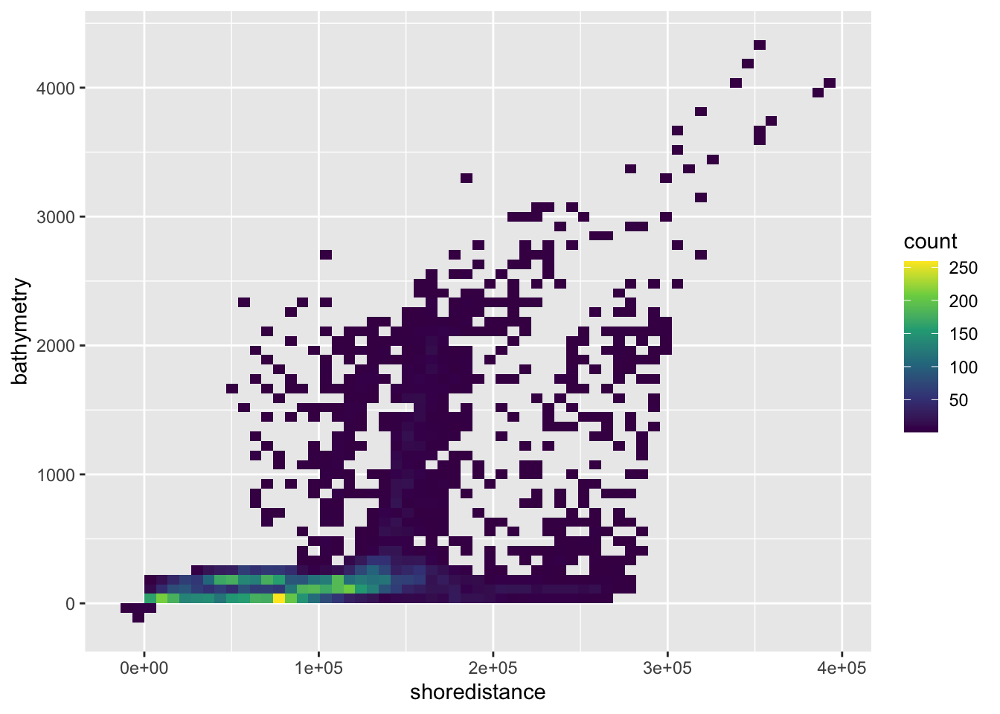
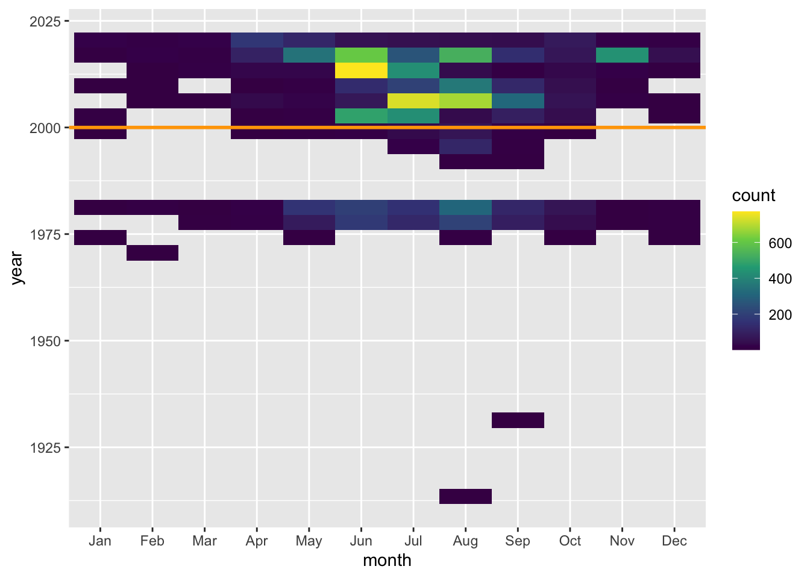
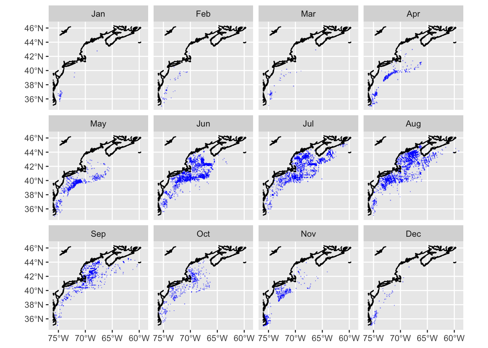

source("setup.R", echo = FALSE)
x = read_obis()Introduction to traditional spatial modeling of species distributions
Here we take a tour through some of the steps we have taken to build spatial distribution models. In later sections we will explore species modeling without spatial info using tidymodels and again using spatial info coupled with tidymodels using tidysdm.
1 Knowing you observations
It is important to be well versed with your observation data much as a chef knows ingredients. Let’s start by reading in the observations and making some simple counts and plots.
Lets start by counting the various records that make up basisOfRecord. In this case, we are not interested in the spatial location of the observations so we drop the spatial info (which saves time during the counting process.)
sf::st_drop_geometry(x) |>
dplyr::count(basisOfRecord)# A tibble: 1 × 2
basisOfRecord n
<chr> <int>
1 HumanObservation 10646So, all are from human observation (not machine based observations or museum specimen).
1.1 Examining embedded covariates
Covariates are those variables that we can use to model Mola mola observations, and, to an extent the distribution, of Mola mola themselves. Some covariates come with the OBIS download - such as surface temperature, surface salinity, distance to the shore and bathymetric depth. Let’s explore these; first we make a 2d histogram of sst and sss.
ggplot2::ggplot(x, ggplot2::aes(x=sst, y=sss) ) +
ggplot2::geom_bin2d(bins = 60) +
ggplot2::scale_fill_continuous(type = "viridis") Warning: Removed 1 row containing non-finite outside the scale range
(`stat_bin2d()`).
It looks like there is some confluence of SSS-SST and when observations occur. It will be interesting the see how that plays out in our modeling.
Let’s do the same with bathymetry and shoredistance.
ggplot2::ggplot(x, ggplot2::aes(x = shoredistance, y = bathymetry) ) +
ggplot2::geom_bin2d(bins = 60) +
ggplot2::scale_fill_continuous(type = "viridis")
Hmmm. This makes sense, that most are observed near shore where the depths are relatively shallow. But some are found for offshore in deep waters. So, does this reflect an observer bias? Or does this reflect a behavior on the part of Mola mola?
1.2 Observations through time
Let’s add year and month columns and make a 2d-histogram of those.
x = dplyr::mutate(x, year = as.integer(format(date, "%Y")),
month = factor(format(date, "%b"), levels = month.abb))
ggplot2::ggplot(x, ggplot2::aes(x=month, y=year) ) +
ggplot2::geom_bin2d() +
ggplot2::scale_fill_continuous(type = "viridis") +
ggplot2::geom_hline(yintercept = 2000, color = 'orange', linewidth = 1)
Not too surprisingly, most observation are during warmer months. And it looks like most occur from 2000s onward (orange line) which is convenient if we want to leverage satellite data into our suite of predictive covariates.
How do these look spatially?
bb = get_bb(form = 'polygon')
coast = rnaturalearth::ne_coastline(scale = 'large', returnclass = 'sf') |>
st_crop(bb)
ggplot(x) +
geom_sf(data = x, color = "blue", alpha = 0.4, shape = ".") +
geom_sf(data = coast) +
facet_wrap(~ month)
It seems that either the Mola mola vacate the Gulf of Maine in winter, or observers in the Gulf of Maine stop reporting. In either case, the observations in winter months are very low compared to summer.